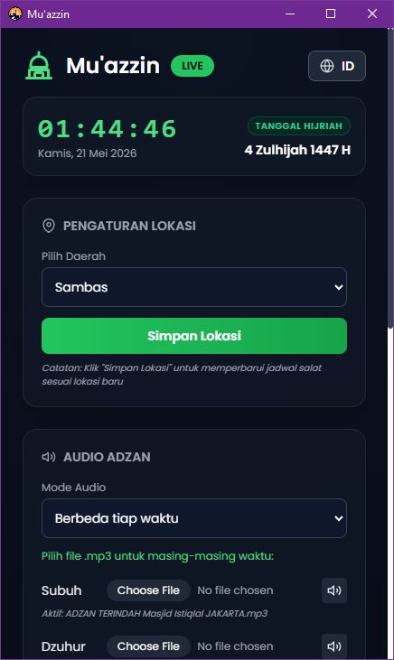
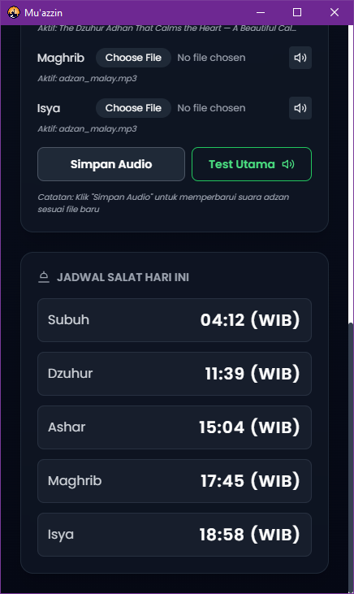

Aplikasi Desktop Berbasis Open-Source
Menjaga waktu ibadah di balik padatnya kesibukan depan layar kini jauh lebih mudah. Mu'azzin hadir sebagai asisten pribadi yang senantiasa melantunkan panggilan suci langsung dari komputer Windows Anda, tepat waktu, tenang, dan tanpa gangguan.
"Sesungguhnya salat itu adalah fardhu yang ditentukan waktunya atas orang-orang yang beriman."
Dari Abdullah bin Mas’ud, Rasulullah ﷺ bersabda bahwa amal yang paling dicintai oleh Allah adalah "Salat tepat pada waktunya."


Jadwal otomatis disesuaikan secara akurat berdasarkan kota pilihan Anda, atau koordinat lokasi kustom.
Bebas mengganti suara adzan bawaan dengan file rekaman muazin (.mp3) favorit Anda sendiri.
Berjalan tenang di background tray Windows Anda tanpa memakan banyak memori RAM PC/laptop.